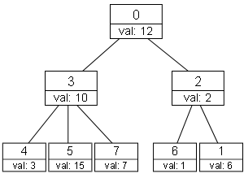

Given a rooted tree which contains N nodes numbered from 0 to N-1 with node 0 as the root. Each node has a distinct value assigned to it. You have to write a program that can find the kth smallest value in the subtree of a given node Xi.
The first line of input contains an integer T (1 ≤ T ≤ 20) the number of cases. Each case begins with two integers N and Q (1 ≤ N ≤ 100,000; 1 ≤ Q ≤ 10,000) denoting the number of nodes and queries respectively. The next line contains N integers Vi (0 ≤ Vi ≤ 231-1) denoting the value assigned to ith node. The next line contains N integers Pi (0 ≤ Pi < N) denoting the parent of ith node. Parent of node 0 will be 0. The next Q lines each contains two integers ki and Xi (1 ≤ ki ≤ sizeof-subtree; 0 ≤ Xi < N).
For each test case, output "Case #X:" (without quotes) where X is the case number starting with 1. Answer each query of the cases in a separate line.
|
Explanation for the 1st sample input:
